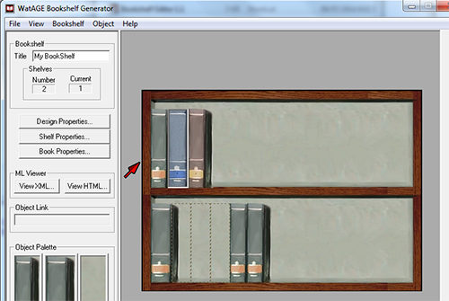
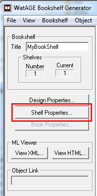
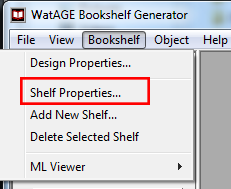
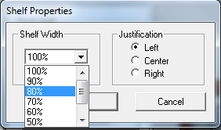

> Working with Shelves >
Changing the size of the shelf
5.3. Changing the size of the shelf
To change the size of the shelf:
- Click the shelf you want to change.
The red arrow indicates the currently selected shelf.
- Do one of the following:
- From the Tool Panel, click Shelf Properties.
- From the Bookshelf menu, click Shelf Properties.
- From the Tool Panel, click Shelf Properties.
- In the Shelf Properties dialog box, from the Shelf Width drop-down list, select the percentage for your shelf width and click OK.
The size of the shelf is changed to the specified width.